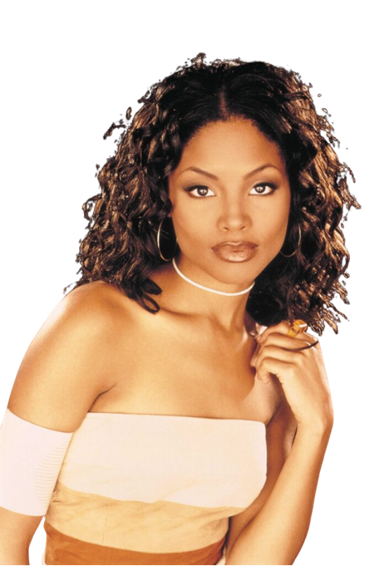
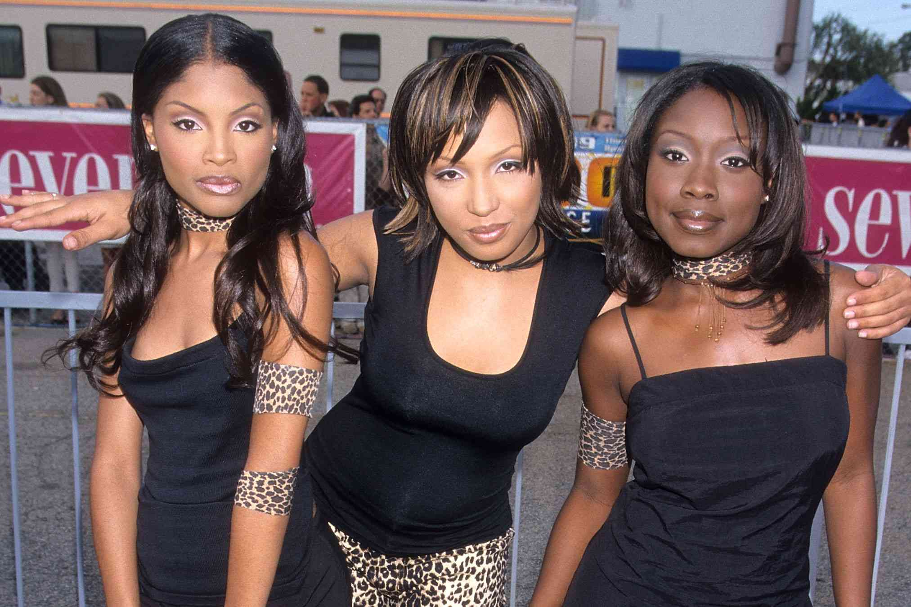
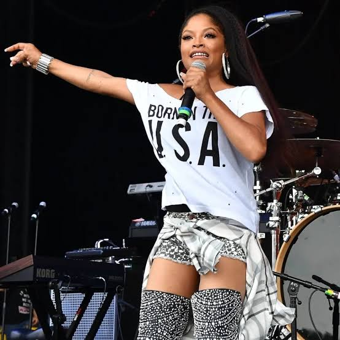
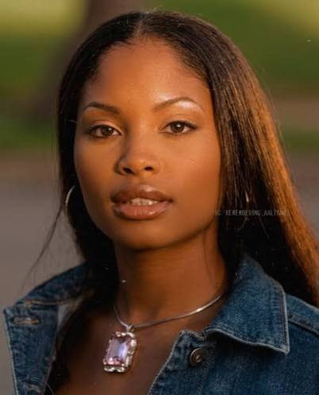
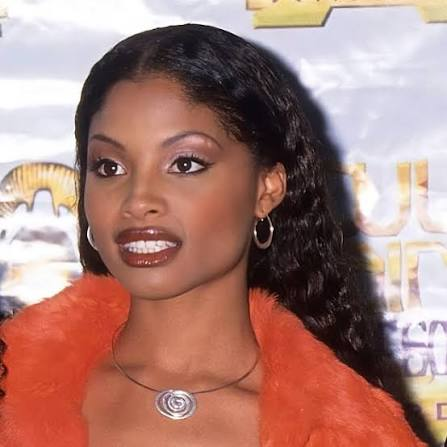
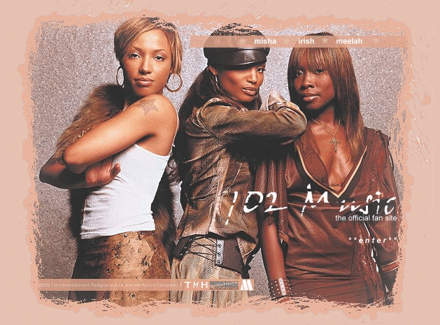
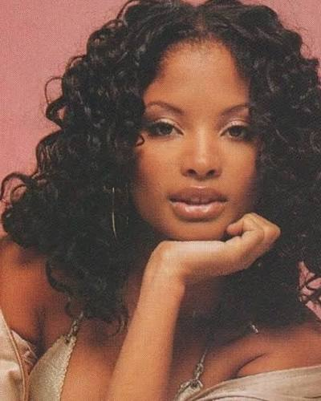
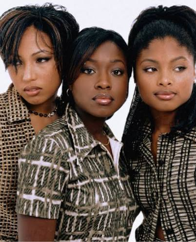
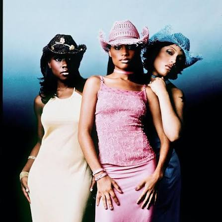

Cantora do grupo 702
Integrante icônica do grupo de R&B dos anos 90 e 2000, conhecida por suas harmonias vocais marcantes.
Deixou um legado inesquecível na música urbana mundial junto com suas irmãs e amigas.
Irish Beatrice Grinstead (1980–2023) foi uma talentosa cantora norte-americana de R&B, amplamente reconhecida como uma das membras fundadoras do aclamado grupo feminino 702. Nascida em Houston, Texas, e criada em Las Vegas, Nevada, sua voz marcante, harmonias precisas e forte presença de palco ajudaram a moldar o som, a identidade visual e a estética do R&B comercial do final dos anos 1990 e início dos anos 2000.
A jornada musical de Irish começou cedo e de forma estritamente familiar. Durante a infância e o início da adolescência, ela refinou seu talento vocal cantando ao lado de sua irmã mais velha, LeMisha Grinstead, e de sua irmã gêmea fraterna, Orish Grinstead. Impulsionadas pela paixão pela música, as irmãs uniram-se à amiga Amelia Cruz em 1993 para formar o grupo infantojuvenil originalmente batizado de Sweeter than Sugar.
Sob essa formação, o 702 alcançou o estrelato global. O álbum de estreia, No Doubt (1996), emplacou sucessos instantâneos como "Steelo" (tema de abertura do programa de TV Cousin Skeeter, da Nickelodeon) e a balada "Get It Together". O ápice comercial veio em 1999 com o lançamento do álbum homônimo 702, impulsionado pelo megahit "Where My Girls At?". A faixa, produzida por Missy Elliott, alcançou o quarto lugar na prestigiada lista Billboard Hot 100 e se tornou um hino de empoderamento feminino da época.
Ao longo dos anos, Irish permaneceu como uma das fundações mais sólidas do grupo, navegando pelas idas e vindas da indústria fonográfica, hiatos e retornos para turnês de nostalgia e celebração do R&B clássico. Infelizmente, a história das irmãs Grinstead também foi marcada por tragédias: Orish, a irmã gêmea de Irish, faleceu precocemente em 2008, aos 27 anos, devido a uma insuficiência renal. Quinze anos mais tarde, em 16 de setembro de 2023, a própria Irish Grinstead faleceu aos 43 anos, após enfrentar sérios problemas de saúde crônicos, deixando um legado inestimável para a história da música pop e do R&B contemporâneo.

Nascimento de Irish Beatrice Grinstead em Houston, Texas (junto com sua irmã gêmea Orish), mudando-se posteriormente para Las Vegas, onde começaram a cantar.
As irmãs Grinstead se unem à amiga Amelia Cruz para formar o grupo infantojuvenil de R&B que mais tarde se tornaria o 702 (nome inspirado no código de área telefônico de Las Vegas).
Lançamento do álbum de estreia do 702, que emplacou sucessos marcantes nas paradas e consagrou o grupo na cena R&B dos anos 90.
Lançamento do segundo álbum (homônimo) impulsionado pelo hit mundial produzido por Missy Elliott, alcançando o Top 5 da Billboard Hot 100.
Falecimento de Irish Grinstead aos 43 anos, deixando um legado eterno na história da música urbana e nos corações dos fãs de R&B.






